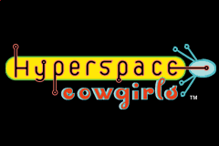

Spirit - Stallion of the Cimarron - Search for Homeland (USA)
Stateless / Passcode
Cartridge Identity
- Game Code
AC6E(FamilyAC6)- Header Title
SPIRIT: STAL- Maker / Revision
78/ rev0- ROM Size
- 4.0 MiB (4,194,304 B)
- Save Media
None / Unknown- SHA-256
37c379885fd3a85e8b54b7c6de13c4cfc31232d78f5e4cfa5bdc717ccf3a3af4- Engine / SDK Group
comm-004(98 families)
Screenshots

Cartridge Storage Architecture: Stateless / Passcode
Zero non-volatile battery hardware: This cartridge PCB contains ROM only (no SRAM, Flash, or EEPROM chips). Progression is preserved via on-screen passcodes or session-only gameplay. No
.sav file is generated or required.
ROM Assets, Compression & Audio
- BIOS Compression
- LZ77 (
0x10): 1,186 streams · RLE (0x30): 0 streams - ROM Pointer Tables
- 10 tables (4 pointing to validated compressed streams)
- SDK Backup Tags
- None